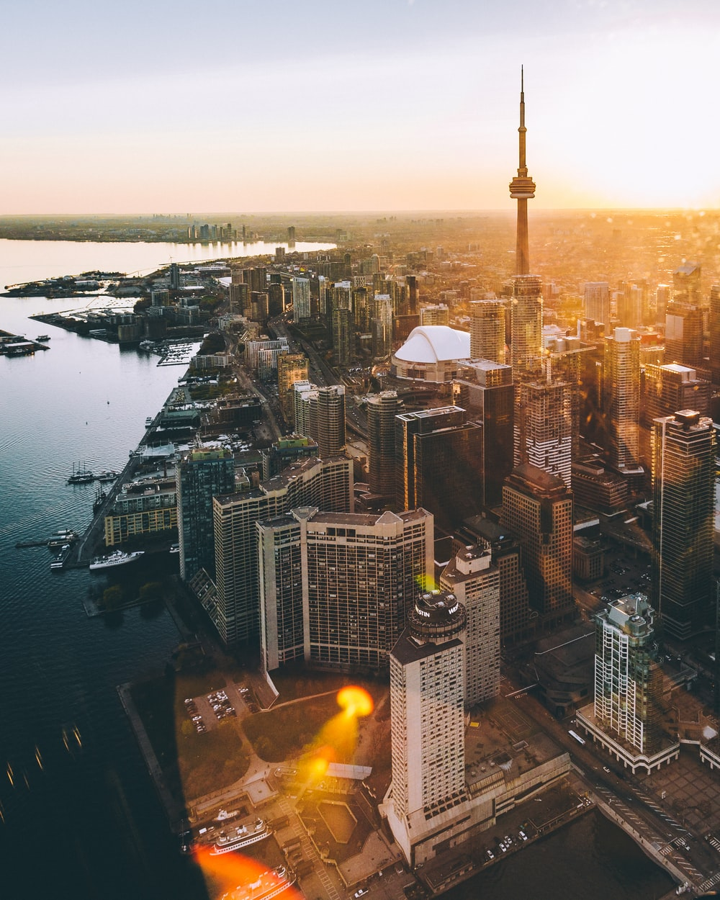

All About
Canada!
Welcome to this website
Canada History
The history of Canada covers the period from the arrival of the Paleo-Indians to North America thousands of years ago to the present day. Prior to European colonization, the lands encompassing present-day Canada were inhabited for millennia by Indigenous peoples, with distinct trade networks, spiritual beliefs, and styles of social organization. Some of these older civilizations had long faded by the time of the first European arrivals and have been discovered through archeological investigations.
From the late 15th century, French and British expeditions explored, colonized, and fought over various places within North America in what constitutes present-day Canada. The colony of New France was claimed in 1534 with permanent settlements beginning in 1608. France ceded nearly all its North American possessions to the United Kingdom in 1763 at the Treaty of Paris after the Seven Years' War. The now British Province of Quebec was divided into Upper and Lower Canada in 1791. The two provinces were united as the Province of Canada by the Act of Union 1840, which came into force in 1841. In 1867, the Province of Canada was joined with two other British colonies of New Brunswick and Nova Scotia through Confederation, forming a self-governing entity. "Canada" was adopted as the legal name of the new country and the word "Dominion" was conferred as the country's title. Over the next eighty-two years, Canada expanded by incorporating other parts of British North America, finishing with Newfoundland and Labrador in 1949.
How Canada Got It's Name
The name “Canada” likely comes from the Huron-Iroquois word “kanata,” meaning “village” or “settlement.”
In 1535, two Aboriginal youths told French explorer Jacques Cartier about the route to kanata; they were actually referring to the village of Stadacona, the site of the present-day City of Québec.
How Canada is Currently
Despite Canada’s great size, it is one of the world’s most sparsely populated countries. This fact, coupled with the grandeur of the landscape, has been central to the sense of Canadian national identity, as expressed by the Dublin-born writer Anna Brownell Jameson, who explored central Ontario in 1837 and remarked exultantly on “the seemingly interminable line of trees before you; the boundless wilderness around you; the mysterious depths amid the multitudinous foliage, where foot of man hath never penetrated…the solitude in which we proceeded mile after mile, no human being, no human dwelling within sight.” Although Canadians are comparatively few in number, they have crafted what many observers consider to be a model multicultural society, welcoming immigrant populations from every other continent.
In addition, Canada harbours and exports a wealth of natural resources and intellectual capital equaled by few other countries.